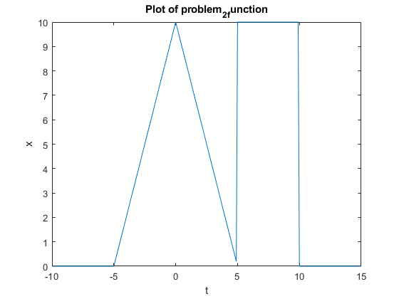
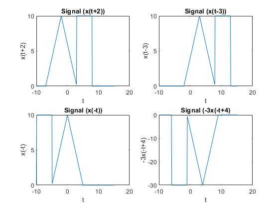

clear all; close all; clc; % Create a vector of t values t = -10:0.1:15; % t takes on values from -10 to 15 in increments of 0.1 % Evaluate the function for each t value for i = 1:length(t) % loop through each element in the t vector x(i) = piecewise(t(i)); % evaluate the function piecewise for each t value and store the result in x end % Plot y versus t plot(t, x) % plot x versus t xlabel('t') % add a label for the x-axis ylabel('x') % add a label for the y-axis title('Plot of problem_2_function') % add a title to the plot %------------------------------------------------------------------------- hold on % hold the current plot for additional plots figure(2) % create a new figure window % Evaluate the function for each t value for i = 1:length(t) % loop through each element in the t vector xa(i) = piecewise(t(i)+2); % evaluate the function piecewise for each t value plus 2 and store the result in xa end subplot(2, 2, 1); % create a subplot in the current figure with a 2 by 2 grid of plots, and select the first plot plot(t, xa); % plot xa versus t xlabel('t'); % add a label for the x-axis ylabel('x(t+2)'); % add a label for the y-axis title('Signal (x(t+2))'); % add a title to the plot % Evaluate the function for each t value for i = 1:length(t) % loop through each element in the t vector xb(i) = piecewise(t(i)-3); % evaluate the function piecewise for each t value minus 3 and store the result in xb end subplot(2, 2, 2); % create a subplot in the current figure with a 2 by 2 grid of plots, and select the second plot plot(t, xb); % plot xb versus t xlabel('t'); % add a label for the x-axis ylabel('x(t-3)'); % add a label for the y-axis title('Signal (x(t-3))'); % add a title to the plot % Evaluate the function for each t value for i = 1:length(t) % loop through each element in the t vector xc(i) = piecewise(t(i)*-1); % evaluate the function piecewise for each t value multiplied by -1 and store the result in xc end subplot(2, 2, 3); % create a subplot in the current figure with a 2 by 2 grid of plots, and select the third plot plot(t, xc); % plot xc versus t xlabel('t'); % add a label for the x-axis ylabel('x(-t)'); % add a label for the y-axis title('Signal (x(-t))'); % add a title to the plot % Evaluate the function for each t value for i = 1:length(t) % loop through each element in the t vector xd(i) = (-3)*(piecewise(-t(i)+4)); % evaluate the function piecewise for each -t value plus 4, multiply the result by -3, and store the final result in xd end subplot(2, 2, 4); % create a subplot in the current figure with a 2 by 2 grid of plots, plot(t, xd); % Plot the values of -3x(-t+4) against t xlabel('t'); % Label the x-axis ylabel('-3x(-t+4)'); % Label the y-axis title('Signal (-3x(-t+4)'); % Set the title of the plot %-------------------------------------------------------------------------- % Define the piecewise function function x = piecewise(t) if t >= -5 && t < 5 % if statement; [-5,5) then: x = -2.*abs(t) + 10; % y = -2|t| + 10 elseif t >= 5 && t < 10 %if statement [5,10) then: x = 10; else x = 0; end end %{ The code defines a piecewise function and then creates a plot of the function for a range of t values. It also creates four additional plots of the function with various transformations applied (time-shift, time-reversal, and amplitude-scaling) using the subplot function. The output is a figure with five plots: the original function, and the transformed functions. The transformations applied to the function are also labeled on each plot. %}

